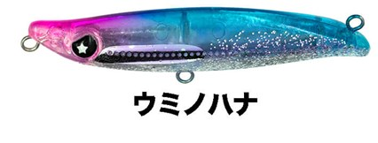
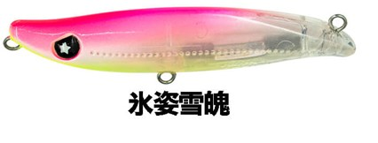
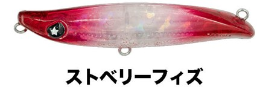
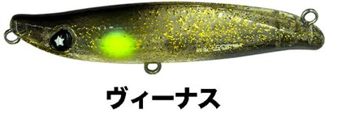

シュリペン55
（SHURIPEN55）
シュリペン55（SHURIPEN55）はLEGARE（レガーレ）のシンキングペンシルです。
浮き上がるアクションで、表層をスローに攻略。主なターゲットはメバルです。
LEGAREライトゲームプラグの第1弾。飛距離を活かして、沖の表層やシャローを意識している魚を攻められます。

画像出典:LEGARE公式HP
スペック
- メーカー
- LEGARE（レガーレ）
- タイプ
- シンキング
- 全長
- 55mm
- 重量
- 5g
- フック
- #12
- アクション
- リトリーブ：タイトスイング／フォール：ローリングフォール
- ターゲット
- メバルなどのライトゲーム
- 価格
- 1,430円（公式オンラインストア価格）
▼今すぐチェック
シュリペン55の特徴
スローに巻いても表層をキープできる、浮き上がるアクション
-
スローでも表層をキープ
浮き上がるアクションで、遅い巻きでも表層のレンジを保てる。表層を意識したメバルにじっくり見せられる。
-
根掛かりを減らせる
表層をキープできるので、藻場の上やゴロタ場でも根掛かりのリスクを減らしてアプローチできる。
-
5gで沖まで届く
55mm・5gで飛距離が出るので、足元だけでなく沖の表層やシャローを意識した魚まで狙える。
シュリペン55の使い方
基本はスローのただ巻きです。着水したらすぐに巻き始め、表層をタイトスイングで泳がせます。
巻くのを止めるとローリングしながら沈むので、表層で反応がない時は、少し沈めてから巻き始めて層を変えてみましょう。
シュリペン55の得意な状況
藻場の上やゴロタ場など、根掛かりしやすい浅い場所の表層を攻めたい時が得意です。
常夜灯周りで、表層に浮いたメバルを狙う時にも使いやすいプラグです。
ワンポイント
シーバス用のシュリペン70と同じ名前のシリーズですが、こちらはメバル向けのライトゲームプラグです。メバリングロッドで扱いやすい5gです。
オススメカラー
シュリペン55は全9色。そのうち4色を紹介します（画像は公式のカラーチャートより）。

ウミノハナまず1つ選ぶならこの色。ピンクとブルーのラメ入りアピール系。

氷姿雪魄ピンクヘッドのクリア系。常夜灯周りに。

ストロベリーフィズピンク系のアピールカラー。

ヴィーナスゴールドラメのダーク系。シルエットとフラッシングで見せたい時に。
画像出典:LEGARE公式HP
シュリペン55に似ているルアー
-
 ラプター50SS
レガーレ
詳細はこちら＞
ラプター50SS
レガーレ
詳細はこちら＞
同じレガーレのメバルプラグ。流れの中でロールで食わせたい時に。
-
 ビーナッツ
BREADEN
詳細はこちら＞
ビーナッツ
BREADEN
詳細はこちら＞
表層から沈み根まで、タイプで攻め分けられるメバリングプラグ。
-
 シュリペン70
レガーレ
詳細はこちら＞
シュリペン70
レガーレ
詳細はこちら＞
同じシュリペンのシーバス用70mm。